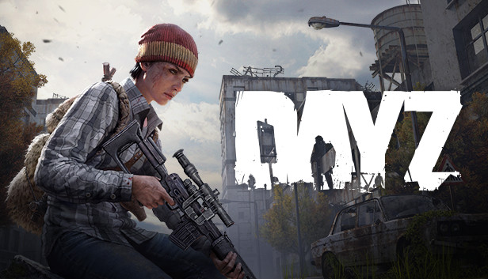
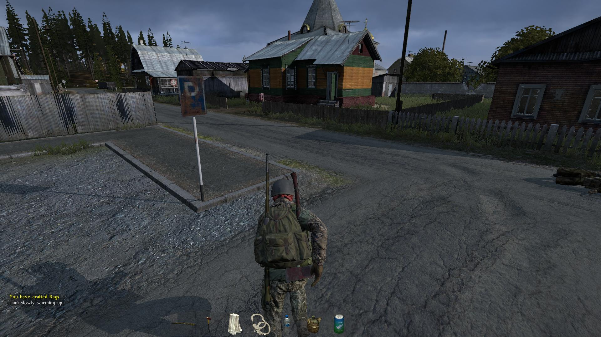
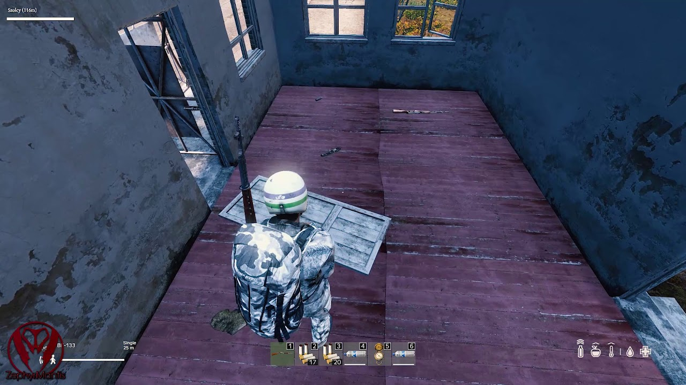

Platvorm: PC, Xbox One, PlayStation 4
Väljalaskeaeg: 16. detsember 2013 (Early Access), 13. detsember 2018 (Full Release)
Lühike sisututvustus: DayZ on avatud maailma ellujäämise mäng, kus mängijad peavad ellu jääma zombie-apokalüpsise ajal, leides toitu, vett ja varustust, ning vältides ohtusid.
DayZ toimub väljamõeldud postsovetlikus riigis nimega Chernarus, kus suurem osa elanikkonnast on muutunud zombideks. Mängijad peavad üksteise vastu võitlema, samal ajal kui nad üritavad ellu jääda zombide ja keskkonnaohtude vastu.
DayZ mängu põhielement on ellujäämine. Mängijad peavad leidma toitu, vett, ravimeid ja relvi, et ellu jääda nii zombide kui ka teiste mängijate rünnakute vastu. Mäng sisaldab avatud maailma, kus on dünaamiline ilmastikusüsteem ja päev-öö tsükkel.
DayZ on mäng, mis paneb rõhku realismile ja ellujäämisele. PC platvormil pakub see suurepärast graafikat ja modifitseerimise võimalusi, samas kui konsooliversioonid on natuke piiratud, kuid pakuvad siiski intensiivset ellujäämise kogemust.